21-Position TCR Carousel and Slim-line Sample Bay Scanner Upgrade
Purpose
Instructions to install the 21-Position TCR Target capture reagent—An assay-specific reagent added as part of specimen pipetting. Carousel and Slim-line Sample Bay Scanner.
Target capture reagent—An assay-specific reagent added as part of specimen pipetting. Carousel and Slim-line Sample Bay Scanner.
This upgrade is required for Fusion compatibility.
Parts and Materials Required
- Absorbent bench pads
- Proper PPE
- 70% Ethanol
- Slim-line Sample Bay Scanner
- 21-Position Carousel Kit
Time Required
- 30 minutes
Procedure
- Put on proper PPE.
- Lay out absorbent bench pads to prepare a clean work surface.
- Remove the 8-Position TCR Carousel referring to Molded TCR Carousel Module Removal and Replacement.
 With a 3 mm hex key, unscrew the 3 hex screws that secure the MagWash bottle holder to the chassis.
With a 3 mm hex key, unscrew the 3 hex screws that secure the MagWash bottle holder to the chassis.
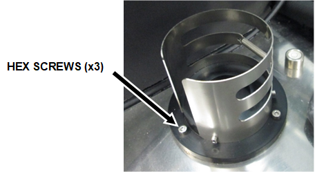
- Remove the MagWash bottle holder from the Panther and place on an absorbent bench pad.
- Unscrew and remove the bubble level from the Panther System and place on an absorbent bench pad.
- Use vise grips if you cannot unscrew the bubble level by hand.
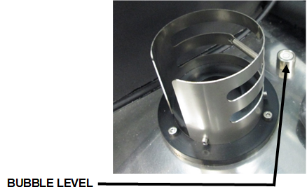
- Disconnect the barcode scanner cable from the back of the Sample Bay module.
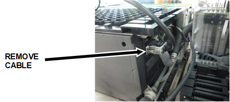
- Using a 3 mm hex wrench, remove (and save) the 5 hex screws securing the barcode scanner to the side of the Sample Bay and mounting bracket.
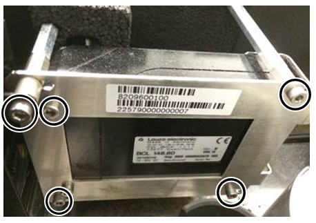
- Place the barcode scanner on your prepared clean work surface.
- Remove the foam spacer from the metal standoffs.
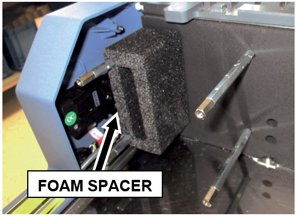
- Using an adjustable wrench, unscrew and remove the 4 metal standoffs that secured the old scanner to the Sample Bay.
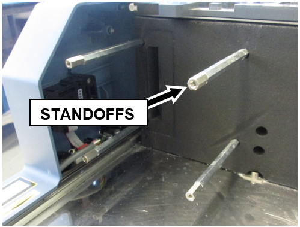
- Unscrew the Philips-head screw that secured the old scanner mounting bracket to the Front Cover and remove the bracket.
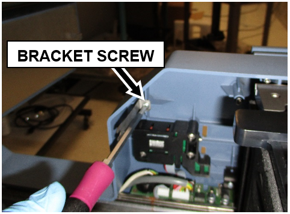

NOTE—The old Panther Sample Bay barcode scanner, front cover bracket, standoffs, foam spacer, MagWash bottle holder, and bubble level will not be used again and can be discarded or saved for future Panther service. - Clean all metal surfaces previously covered by the old TCR mixer, Scanner, and MagWash Bottle Holder using 70% ethanol.
- Take the new Slim-line Scanner out of the box.
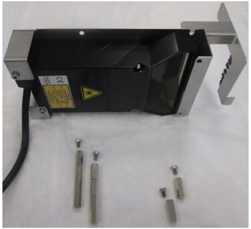
- Using a 2.5 mm hex wrench, remove the 4 hex screws securing the 4 standoffs to the scanner.
- Using an adjustable wrench, install the 4 standoffs for the new Slim-line Scanner. The short standoffs are installed in the front and the longer standoffs in the back.
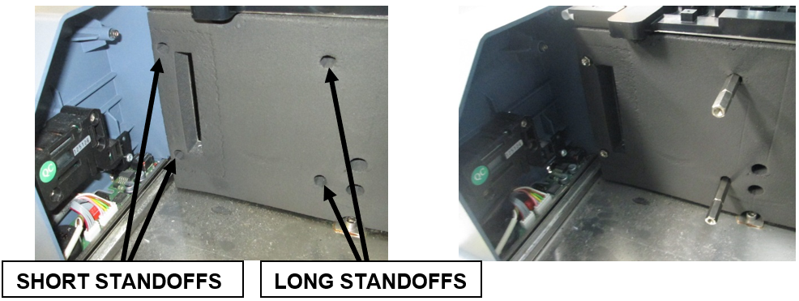
- Using a 2.5 mm hex key, secure the new Slim-line Scanner onto the metal standoffs with the 4 standoff hex screws previously removed in Step 15.
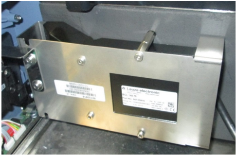
- Secure the bracket with grounding brush to the Front Cover with the Phillips-head screw removed in Step 12.
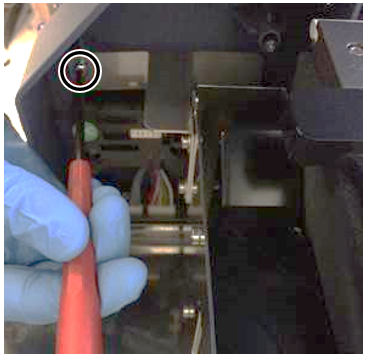
- Plug the Slim-line Scanner into the back of the Sample Bay module.
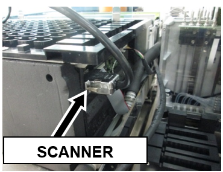
- Route the Slim-line Scanner cable in such a way that it does not interfere with the new TCR carousel or pipettor movement. See the following image for an example:
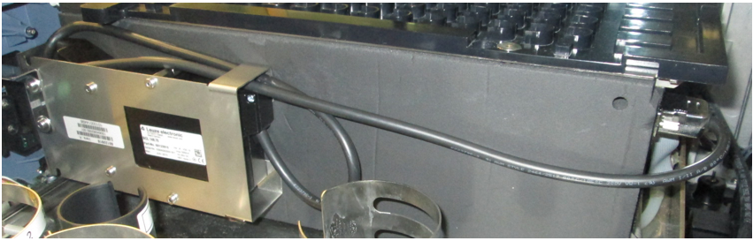
- Arrange the USB Hub and Front Cover cables neatly in the corner of the L-bracket to the right of the carousel’s installation position so they will all run under the lip of the new carousel assembly when set into place, and prevent the wires from binding or being pinched.
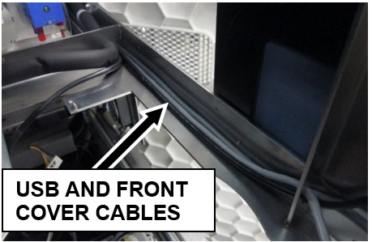
- Locate the guide pins before setting the new TCR carousel into the system.
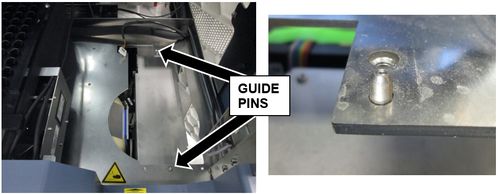
- Set the new 21-Position Carousel assembly into place.
- Using a 4 mm hex wrench, secure the new 21-Position Carousel with 4 hex screws.
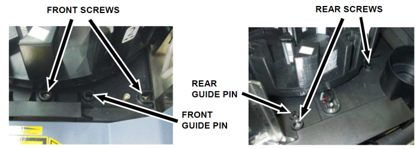
- Plug the CAN cable coming from the COP into the new TCR Carousel.
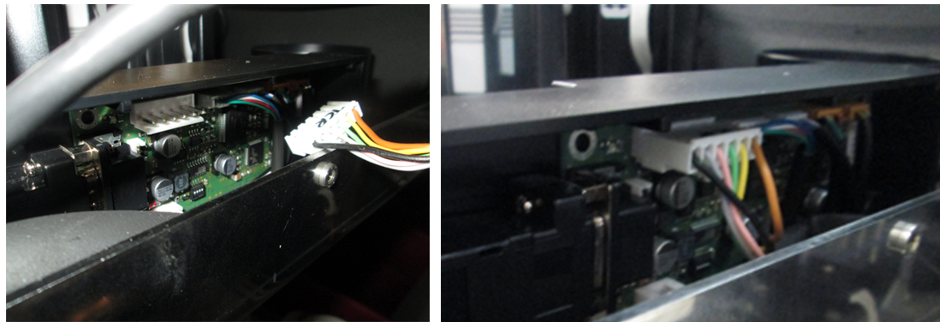
- Verify all cables are clear of moving parts and sharp edges and are not pinched or experiencing excessive tension.
- Proceed to Verification.
Verification
- Power on the Panther System.
- Perform Verification as described in Sample Bay Barcode Reader Verification Procedure.
- Perform Verification as described in Molded TCR Carousel Module Removal and Replacement or TCR Carousel Module Removal and Replacement
- Verification is complete.
 button at the top of the page to send feedback, comments, or change requests.
button at the top of the page to send feedback, comments, or change requests.